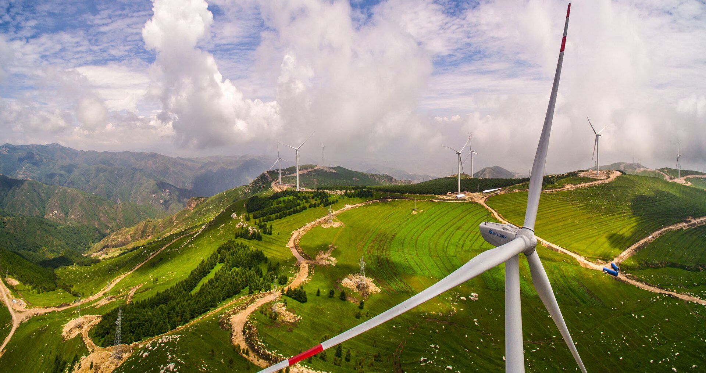
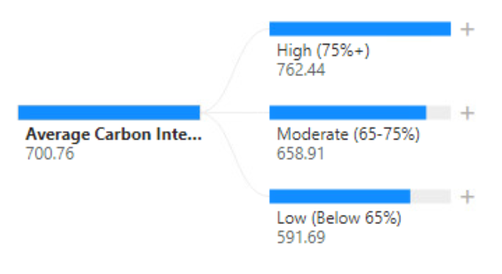
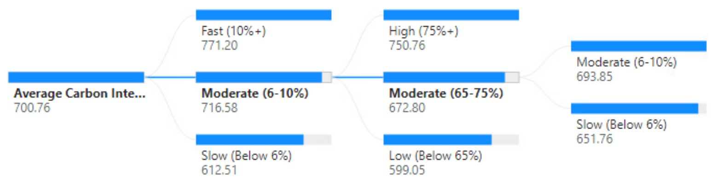
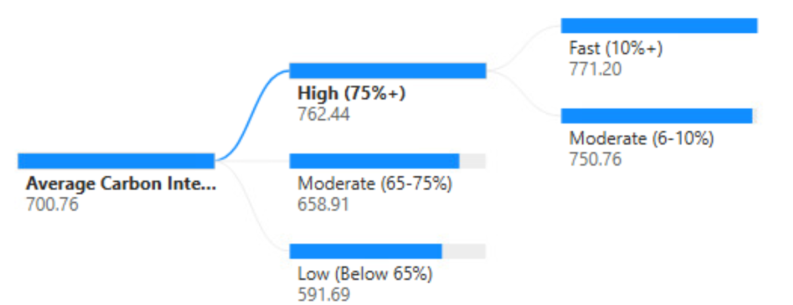
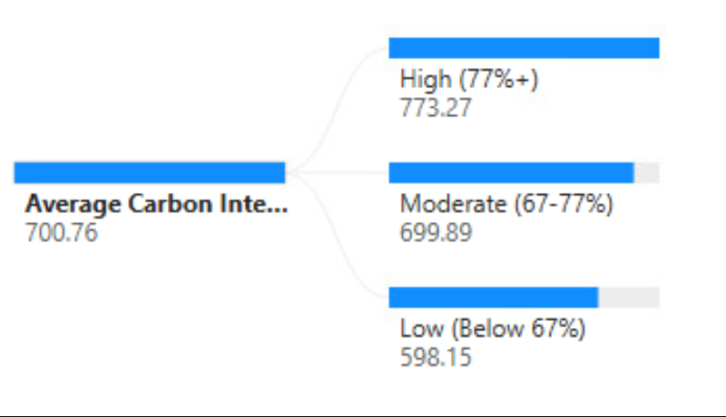
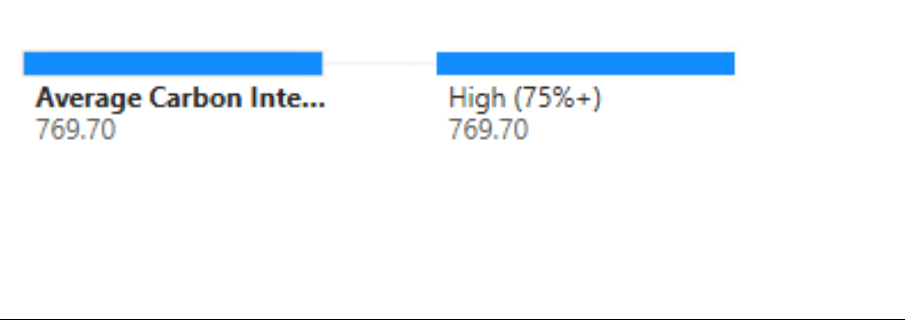
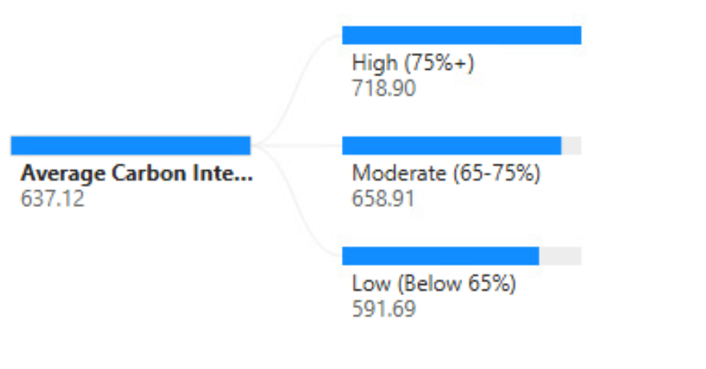
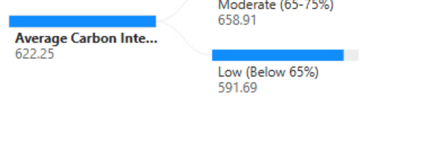

What Drives China’s Electricity Carbon Intensity?
A Power BI decision analysis of coal dependence, industrial growth, and the changing electricity mix, 2000–2024.
Introduction
China's industrial growth has required a major increase in electricity production. At the same time, China has been adding wind, solar, hydroelectric, and nuclear power to a system that has historically relied heavily on coal. This raises the main question I wanted to investigate: Which variables are most closely associated with the carbon intensity of China's electricity generation? Carbon intensity is measured in grams of carbon dioxide per kilowatt-hour (gCO₂/kWh). That is different from total emissions. A country can produce much more electricity while still reducing the emissions associated with each unit of power. I think that distinction is important when evaluating an energy transition in a country where electricity demand keeps growing.
My goal is to identify the factors that appear to be most closely associated with China's electricity carbon intensity between 2000 and 2024. I focused on coal's share of electricity generation, wind and solar generation, industrial value-added growth, and electricity demand growth. I am not trying to predict an exact emissions figure or argue that any one variable caused the changes we see. What I want to understand is which combinations of historical conditions were associated with higher or lower carbon intensity, and whether those relationships still hold up when I revise the model.
I think this is a useful question for decision analysis because energy planners, businesses, and industrial analysts have to consider both electricity demand and where that electricity comes from. For example, if faster industrial growth is associated with higher carbon intensity, that could reflect the greater reliance on coal during those years rather than an independent effect of industrial growth itself. To see how reliable the initial results are, I compare different thresholds, time periods, and branch sizes in Power BI decomposition trees. I view the result as a tool for identifying relationships worth investigating, not a substitute for a full energy-system model or a causal analysis.
Data & sources
I combined two publicly available sources for this project. The Our World in Data (OWID) Energy Dataset contains information on electricity generation, consumption, and the generation mix (Our World in Data, n.d.). For industrial activity, I used the World Bank's indicator NV.IND.TOTL.KD.ZG, which measures annual growth in industry value added, including construction (World Bank, n.d.). Neither dataset was created specifically for my research question. I had to select the variables that were relevant, make sure the units and years lined up, and document how the two sources were combined.
The finished dataset contains 25 annual observations, one for each year from 2000 through 2024, and 13 columns. The main outcome is electricity carbon intensity, measured in gCO₂/kWh. The other variables include electricity generation and demand in terawatt-hours, the shares generated by coal, wind, solar, hydro, and nuclear power, the combined wind-and-solar and low-carbon shares, demand growth, and industrial value-added growth. Average carbon intensity across the period was 700.76 gCO₂/kWh, with annual values ranging from 555.40 to 790.92. Twenty-five observations is a small dataset, but having a consistent annual structure does make it possible to compare clearly defined groups.
Each variable contributes something different to the question. Coal share gives me a measure of reliance on a carbon-intensive fuel, while wind and solar share helps show how the generation mix has changed. Industrial value-added growth provides some context for economic activity, and electricity demand growth tells me how quickly the power system was expanding. By putting these variables into a decomposition tree, I can look at whether an apparent relationship with industrial growth still shows up after I separate the years by coal dependence. The same approach could be repeated as new annual data become available.
The limitations are just as important as the useful parts of this dataset. With only 25 years, I do not think it would make sense to build a complicated tree with a lot of small terminal branches. The figures are also national averages, so they do not capture differences among Chinese provinces, power grids, or industries. Industrial value-added growth is not the same thing as industrial electricity consumption. Another issue is that coal share and low-carbon share are parts of the same generation mix used to calculate carbon intensity, so these measures are not independent of one another. Finally, public datasets can be revised. I would keep the cleaned file and the Power BI report together so someone reviewing the project could reproduce the results rather than assuming a later download would match exactly.
Preparing the data
I started by filtering the energy dataset to China and the years 2000–2024, removing variables that were not relevant, and checking the annual records. The World Bank file was arranged with years in separate columns, so I reshaped the industrial-growth indicator into a two-column series with a year and a corresponding growth rate. I then merged the two sources by year and checked that each year appeared only once. After verifying the data types and units, I loaded the cleaned table into Power BI without changing the meaning of the original numerical measures.
For the wind-and-solar variable, I added the two generation shares together instead of averaging them. I also kept the other low-carbon sources, including hydro and nuclear, available in the dataset. Electricity demand growth was calculated as the percentage change from the previous year. Since the extract starts in 2000, there was no prior-year observation available for that first year, so I left its demand-growth value blank rather than making one up. I checked for missing values, incorrect data types, and percentages outside reasonable ranges. In Power BI, I used the average of carbon intensity rather than the sum because adding annual gCO₂/kWh values would not produce a meaningful result.
I created DAX categories for several continuous variables so I could compare groups in the decomposition trees. For coal dependence, the original cutoffs were high (75% or more), moderate (65% to less than 75%), and low (less than 65%). Wind and solar shares were grouped as emerging (less than 2%), growing (2% to less than 10%), or established (10% or more). I also grouped industrial value-added growth and electricity demand growth as slow (less than 6%), moderate (6% to less than 10%), or fast (10% or more). These are analytical cutoffs I chose, not official industry standards. I documented them because I wanted to see whether changing the boundaries would change the conclusions.
My approach had three main parts. First, I looked at the distribution of the data and built initial decomposition trees with different orders of explanatory variables. Next, I examined the branches to see whether any apparent pattern was based on only one or two years. Finally, I revised the coal-share thresholds, compared earlier and later periods, and removed branches that were too small to interpret confidently. That gave me a way to test the stability of the results without adding a level of model complexity that the dataset could not really support. The decomposition tree remained the main analysis, with descriptive comparisons used to evaluate it.
Why a decomposition tree?
I chose a top-down Power BI decomposition tree rather than the bottom-up classification approach we used in some of the labs. A bottom-up classification tree can be useful when the goal is to predict a target category and evaluate how well those predictions perform. My question is different. I am trying to understand which historical conditions were associated with different levels of a continuous outcome: electricity carbon intensity. With only 25 annual observations, turning that outcome into more prediction categories could also make it easier to overfit the model.
Power BI's decomposition tree lets me break down a numeric measure using the dimensions placed in the Explain by field. I can choose the order of the splits and compare how the results change when I start with a different variable (Microsoft, n.d.). I find that useful for decision analysis because it makes the relationships easy to inspect. At the same time, this is not a predictive classification model, so it does not give me a cross-validated accuracy score or classification error rate. Instead, I evaluate the analysis by reporting the number of years in each branch, testing reasonable alternatives, and checking whether the main relationships remain consistent.
I am using the model to compare possible decision-making questions, not to recommend a specific energy policy. One way to begin is with coal dependence and then ask whether industrial growth distinguishes the years within those coal groups. Another is to begin with industrial growth and see what coal reliance adds to the comparison. After testing both, I preferred the coal-first approach. It is easier to interpret, and I can limit the secondary splits to groups with enough observations. In my view, a larger difference between two averages is not automatically more useful if the result depends on just one or two years.
The initial models
In my first tree, Model A, I started with coal dependence. The overall average electricity carbon intensity was 700.76 gCO₂/kWh. The high-coal group contained 14 years and averaged 762.44 gCO₂/kWh. The moderate-coal group averaged 658.91 gCO₂/kWh across five years, and the low-coal group averaged 591.69 gCO₂/kWh across six years. That is a difference of 170.75 gCO₂/kWh between the high- and low-coal groups. The direction of the relationship makes sense: years with less coal in the electricity mix also had lower emissions per unit of power.

I then looked at wind and solar share within the high-coal group. In the 12 years when wind and solar accounted for less than 2% of generation, average carbon intensity was 769.70 gCO₂/kWh. In the two years when their combined share was between 2% and 10%, the average was 718.90. That caught my attention at first, but those two observations were just 2012 and 2013. When I added industrial growth as another split, both years landed in the moderate-growth category, and the average remained 718.90. I did not think a two-year branch with no further separation was enough to support a broad conclusion about industrial activity.
In Model B, I reversed the order and started with industrial value-added growth. Years with fast growth (10% or more) averaged 771.20 gCO₂/kWh. The moderate-growth group, with nine years, averaged 716.58, while the slow-growth group, with eight years, averaged 612.51. Looking only at that first split, it would be easy to conclude that faster industrial growth was associated with higher carbon intensity. But those fast-growth years also tended to be earlier years when China depended more heavily on coal. I wanted the next split to help put that relationship into context instead of treating industrial growth as the explanation by itself.

Within Model B's moderate industrial-growth group, the high-coal years averaged 750.76 gCO₂/kWh, the moderate-coal years averaged 672.80, and the low-coal years averaged 599.05. The problem was the branch sizes: six years in one group, two in another, and only one in the third. I also split the two-year moderate-coal group by electricity demand growth. That left 2014 at 693.85 and 2016 at 651.76 gCO₂/kWh, a difference of 42.09. With one observation per branch, I cannot reasonably interpret that difference as an independent effect of electricity demand. This was one of the clearest reasons to simplify the model.
Comparing Models A and B showed me how much the order of the variables affects what stands out in a decomposition tree. Coal dependence was the clearest relationship in the data, while industrial growth and electricity demand helped provide context. The more I continued splitting the branches, though, the more the results depended on very small groups. I did not want to mistake a complicated-looking tree for a better analysis. For the revised model, I kept coal dependence as the first split and only added another level when the branch had enough years to make the comparison meaningful.
Revising the decision tree
In the revised version of Model A, I kept the original coal categories but changed what I examined within the high-coal group. Instead of splitting that group by wind and solar share, I used industrial value-added growth. The overall and coal-group averages stayed the same. Among the 14 high-coal years, the eight fast-growth years averaged 771.20 gCO₂/kWh, compared with 750.76 across the six moderate-growth years. The difference was 20.44 gCO₂/kWh, much smaller than the gap between the high- and low-coal groups. Both of these branches contain more observations than the original two-year wind-and-solar branch.

I think this makes the tree more useful as a decision-support tool. It starts by showing how carbon intensity differed across coal-dependence categories, then asks whether industrial growth helps distinguish years within the high-coal group. It does not mean industrial growth was unimportant, and it certainly does not mean changing coal share alone would reproduce the historical results. What the tree does give a decision maker is a straightforward way to identify the historical conditions that deserve a closer look.
| Specification | Coal share category | Years (n) | Mean gCO₂/kWh |
|---|---|---|---|
| Original thresholds | High: 75%+ | 14 | 762.44 |
| Moderate: 65–<75% | 5 | 658.91 | |
| Low: <65% | 6 | 591.69 | |
| Revised thresholds | High: 77%+ | 10 | 773.27 |
| Moderate: 67–<77% | 8 | 699.89 | |
| Low: <67% | 7 | 598.15 |
Note. Each observation is one year; means are unweighted across years. Category thresholds are analysis choices.
Testing the results
The first sensitivity check was to see what happened when I changed the coal-dependence thresholds. Under the original cutoffs, the difference between the high- and low-coal group averages was 170.75 gCO₂/kWh. I then moved the boundaries to high at 77% or more, moderate from 67% to less than 77%, and low below 67%. The revised high-coal group had 10 years and averaged 773.27 gCO₂/kWh. The moderate group had eight years and averaged 699.89, while the low group had seven years and averaged 598.15. The high-to-low difference became 175.12 gCO₂/kWh. Even though the group membership and averages changed, the overall ordering stayed the same.

The reason I tested those thresholds is that even a small change can move years from one category to another. For example, raising the high-coal cutoff from 75% to 77% moves 2012 and 2013 out of that group. Changing the lower boundary also affects which years are classified as low coal. Those cutoffs are modeling choices, not physical tipping points in the electricity system. If a small change in a cutoff completely reversed the relationship, I would be much less confident in the result. In this case, the high-to-low ordering remained consistent across the specifications I tested.
My second check was to separate the observations into 2000–2011 and 2012–2024. Carbon intensity averaged 769.70 gCO₂/kWh in the first 12 years and 637.12 in the following 13 years. One limitation became obvious right away: every year from 2000 through 2011 was in the high-coal category, so there was no meaningful comparison of coal groups within that period. From 2012 through 2024, the two high-coal years averaged 718.90, the five moderate-coal years averaged 658.91, and the six low-coal years averaged 591.69 gCO₂/kWh. The same ordering appeared, but the high-coal group only had two observations.


I did one more comparison without those two high-coal years from the later period. That left 11 observations, with an overall average of 622.25 gCO₂/kWh. The moderate-coal group contained five years and averaged 658.91, while the low-coal group contained six years and averaged 591.69. The difference was still 67.22 gCO₂/kWh. Removing the smallest group did not eliminate the moderate-versus-low relationship. At the same time, I do not think this test separates the effect of coal from all the other changes happening over the same years.

These checks tell me something about the stability of the pattern, but they do not establish predictive accuracy. A decomposition tree reports group averages; it does not automatically provide a classification error rate, confidence interval for group differences, or holdout prediction. I recorded the number of years in each branch and recalculated the averages to make sure they agreed with the underlying data. I also compared the two original variable orders and removed splits that were essentially single-year comparisons. This follows my professor's feedback: with only 25 observations, adding another complicated diagnostic would not necessarily make the analysis more reliable.
Limitations & sources of error
Overall, the results seem reasonable in the context of electricity generation. Coal produces relatively high carbon emissions per unit of electricity, so I would expect periods with less coal in the generation mix to have lower carbon intensity. From 2000 to 2024, the combined wind-and-solar share increased from about 0.04% to 18.20%, while coal's share fell from about 78.21% to 57.77%. Over the same period, electricity carbon intensity declined from 783.51 to 555.40 gCO₂/kWh, even as electricity demand increased from 1,347 TWh to 10,070 TWh. To me, that is an important distinction: electricity demand can grow substantially while emissions per unit of electricity decline.
The biggest caution is that coal dependence and calendar time are closely connected in this dataset. With my original thresholds, the high-coal group consists of 2000–2013, the moderate-coal group of 2014–2018, and the low-coal group of 2019–2024. In other words, the tree is also separating three periods in China's energy transition. A lot more was changing during those years than just coal's share of generation: renewable capacity, efficiency, electricity demand, and economic conditions all changed as well. The data also leave out factors such as electricity transfers between provinces, coal-plant efficiency, hydroelectric variability, renewable curtailment, and the industrial mix of electricity consumption. The World Bank industry-growth measure adds some economic context, but it cannot replace data on actual industrial electricity use.
There are several easy mistakes to make with this kind of model, and I tried to avoid them. One is summing carbon-intensity values across years instead of averaging them. Another is choosing category boundaries without explaining where they came from or testing whether the results depend on them. The biggest concern in my trees was letting the analysis keep splitting until a branch represented just one year and then interpreting that result as a general pattern. I reported the sample sizes and removed the smallest late-period group for that reason. I also checked that wind-and-solar share was the sum of two shares, that the missing demand-growth value for 2000 was not treated as zero, and that merging the datasets did not duplicate years.
I can see a fairly consistent relationship between coal dependence and carbon intensity, but I cannot isolate the effects of industrial growth or electricity demand nearly as well. I think that is a useful finding in itself, as long as I am clear about what the data can and cannot support. With a larger dataset, especially one containing provincial observations or more detailed generation and industrial electricity data, I could compare more conditions within the same period. For this project, I do not want to claim that the 25 national observations can provide that level of detail.
Putting the model to work
After these comparisons, I chose the coal-first decomposition tree as the final model. It makes the main relationship easy to see, allows a limited second split for industrial growth, and avoids the most unreliable one-year branches. Its ordering also held up when I changed the coal-share thresholds. Those are the reasons I prefer it to the more complicated alternatives. I am not presenting it as a way to calculate the effect of a specific emissions policy. I am using it to show the clearest historical relationships in the data and to identify questions that would be worth examining with more detailed information.
If an organization wanted to put these results to use, I would start with a fairly straightforward process. First, an energy-planning team could use the tree to identify years when carbon intensity was lower and check whether the same patterns appear in more detailed data. Next, they would investigate what was actually happening in those years, including coal generation, additional low-carbon supply, demand, grid constraints, and plant efficiency. Finally, they would bring in information this dataset does not contain, especially regional differences, costs, and reliability. Only then would it make sense to evaluate investments, changes in the generation mix, or demand-side measures. The Power BI tree helps organize that investigation; it does not make the policy decision for them.
Another advantage is that the model can be updated. If new annual observations become available, I can add them using the same column structure and recalculate average carbon intensity. I can also change the DAX category thresholds or use different Explain by fields to see whether the relationships continue. I would keep a copy of the earlier version alongside the updated one so that changes in the findings could be traced. For that to work, the source versions, data transformations, category boundaries, year filters, and date of the analysis all need to be documented. I see that flexibility as useful for continuing energy-sector analysis rather than treating the project as a one-time result.
For decision makers, I would present one main decomposition tree rather than every exploratory path I tested. I would include a small table showing branch sizes and average carbon intensity, a short explanation of the sensitivity checks, and the limitations that matter most. More detailed definitions and screenshots could remain in the appendix for anyone who wants to examine the analysis more closely. That way, the main finding stays understandable without hiding the uncertainty behind it.
Ethical considerations
Because I used publicly available, aggregated energy and economic statistics, individual privacy is not a major concern for this project. I still have to give the original sources proper credit and follow their terms of use. World Bank data are generally available under attribution terms, although the specific conditions need to be checked, and OWID identifies the original sources behind its energy data (World Bank, n.d.; Our World in Data, n.d.). If this analysis were published or the cleaned dataset were distributed, I would document the indicators, acknowledge the original data providers, and check any third-party reuse requirements.
To me, the bigger ethical issue is the risk of giving decision makers more certainty than the analysis actually supports. Once the decomposition tree divides the data into categories, it is easy to look at the differences and assume one variable caused them. But this model cannot tell me how much carbon intensity would fall if coal's share were reduced by a particular amount, or separate the effects of industrialization and electricity demand. Presenting those averages as causal effects or precise forecasts could lead someone to overlook costs, reliability, and regional conditions. That is why I make a point of reporting branch sizes, the overlap with time, and the exploratory nature of the findings.
I also think it is important to consider who would be affected by decisions based on national averages. Changes in electricity infrastructure can affect industrial jobs, access to power, and affordability very differently from one region to another. My dataset does not measure those effects. Before recommending an intervention, I would want regional, economic, and operational information to supplement this analysis. The purpose of decision analysis is to support better judgment, not replace it with a chart.
Conclusion
Looking across the 2000–2024 data, the clearest relationship I found was that years with lower coal dependence also tended to have lower electricity carbon intensity. The original tree showed a 170.75 gCO₂/kWh gap between the high- and low-coal groups, and the same ordering remained when I changed the thresholds. Even after I removed the two-year high-coal branch from the later period, the moderate- and low-coal groups still differed by 67.22 gCO₂/kWh. Those results are consistent, but the small sample and the overlap with historical time periods mean I cannot claim that coal share alone caused the differences.
That is why I ended up with a simpler final tree than the one I started with. I kept coal dependence as the main split, used industrial growth only where the group sizes supported it, and evaluated the result with threshold and time-period comparisons rather than trying to invent a prediction-accuracy measure. In my view, the value of this project is not that it proves a single explanation for China's electricity transition. It shows how I can use Power BI and decision analysis to identify useful historical associations, test whether they hold up, and be clear about the questions that still require more data.
Sources & further reading
- Microsoft. (n.d.). Create and view decomposition tree visuals in Power BI. Microsoft Learn. https://learn.microsoft.com/en-us/power-bi/visuals/power-bi-visualization-decomposition-tree
- Our World in Data. (n.d.). Energy data [Dataset and documentation]. GitHub. https://github.com/owid/energy-data
- World Bank. (n.d.). Industry (including construction), value added (annual % growth) (NV.IND.TOTL.KD.ZG). World Development Indicators. https://data.worldbank.org/indicator/NV.IND.TOTL.KD.ZG?locations=CN
- World Bank. (n.d.). Summary terms of use. https://data.worldbank.org/summary-terms-of-use